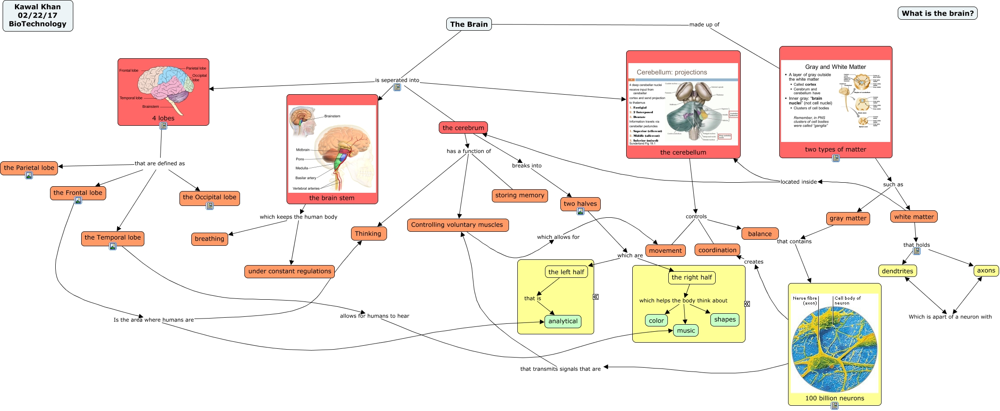

WARNING:
JavaScript is turned OFF. None of the links on this concept map will
work until it is reactivated.
If you need help turning JavaScript On, click here.
This Concept Map, created with IHMC CmapTools, has information related to: Brain _KK BT S 2017, the right half which helps the body think about music, white matter that holds axons, 4 lobes that are defined as the Frontal lobe, gray matter that contains 100 billion neurons, The Brain is seperated into the brain stem, the Frontal lobe Is the area where humans are analytical, The Brain is seperated into 4 lobes, 4 lobes that are defined as the Occipital lobe, white matter that holds dendtrites, white matter located inside the cerebellum, the left half that is analytical, the cerebrum has a function of Thinking, 4 lobes that are defined as the Temporal lobe, two halves which are the left half, the cerebrum has a function of Controlling voluntary muscles, axons Which is apart of a neuron with dendtrites, 100 billion neurons that transmits signals that are Controlling voluntary muscles, the brain stem which keeps the human body under constant regulations, Controlling voluntary muscles which allows for movement, two types of matter such as gray matter
